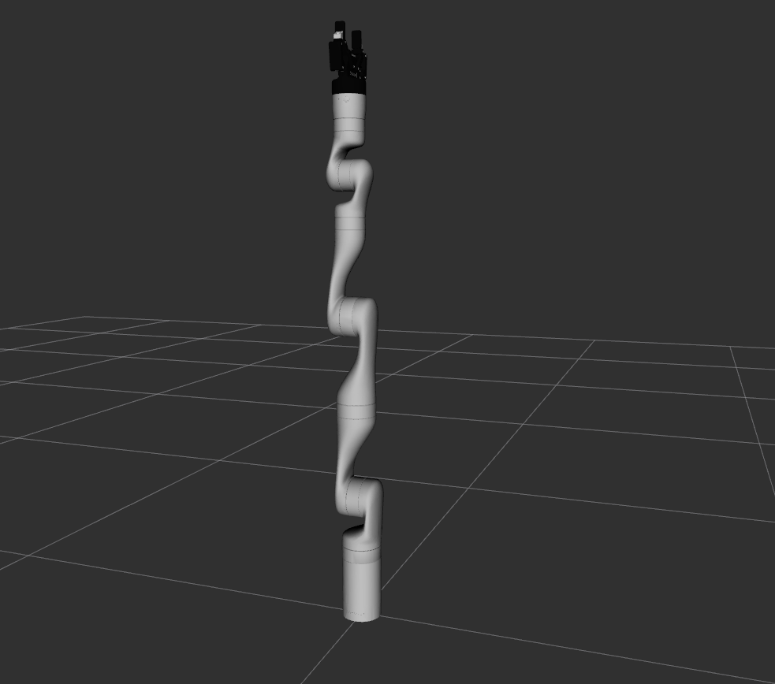
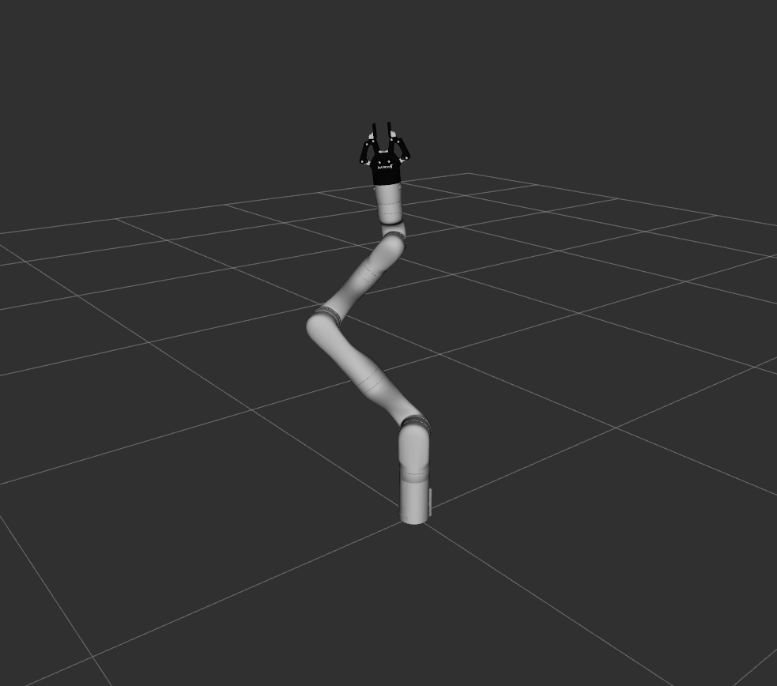

B1 · The arm
Read the description of the Gen3: its seven joints, where each one can turn and how fast, how the gripper's fingers are tied together, and why a 7-joint arm has an extra choice that a 6-joint arm does not.
1. Goal
Everything the computer knows about the arm's shape is in one file, the URDF. RViz draws the arm from it (A6), robot_state_publisher makes the TF frames from it (A6), and ros2_control and MoveIt read the joint names and limits from it (A7, B4). In this lesson you generate that file, read it, and move the arm with sliders so you can see what the numbers in it mean.
At the end of this lesson you will have:
- generated the arm's URDF from its xacro files and printed its tree of links and joints,
- found the 7 arm joints, and told which ones can turn without end and which have a range,
- read one joint's entry (parent, child, axis, limits) and converted its numbers from radians to degrees,
- moved every joint with sliders in RViz and seen the limits stop you,
- seen that the gripper has one slider but six joints, tied together by
mimictags, - compared the 6-joint and 7-joint versions of the arm.
2. Concepts
Link, joint, URDF, xacro
A link is one rigid piece (a shoulder, a forearm). A joint connects two links: a parent and a child, and says how the child may move relative to the parent. A URDF is an XML file that lists all links and joints. Links and joints form a tree (the same rule as TF in A6: one parent per link). Each link becomes a TF frame, named after the link.
The URDF of a real robot is long, so it is not written by hand. Kinova writes it as xacro files: a URDF with variables and macros, such as "the arm has dof joints". The tool xacro expands them into a plain URDF, given the choices you pass (dof:=7, gripper:=robotiq_2f_85). The launch file view_robot.launch.py runs xacro with these choices every time you start it.
Joint types you will meet
| Type | What it does | In the Gen3 |
|---|---|---|
fixed | No movement. It only places one link relative to another. | the base on the world, the hand frame on the last link, the gripper on the arm |
revolute | Turns around an axis, between a lower and an upper limit (radians). | joints 2, 4, 6, and the gripper's knuckles |
continuous | Turns around an axis with no limit: any number of full turns. | joints 1, 3, 5, 7 |
A joint entry also gives an axis (the line it turns around, in the joint's own frame), an origin (where the joint sits relative to its parent) and a limit element: velocity (the fastest it may turn, rad/s) and effort (the most torque it may deliver, N·m), and for revolute joints lower and upper.
Radians and degrees
ROS uses radians. A full turn is 2π = 6.283 rad, so
degrees = radians × 180 / π, which is about radians × 57.296. For example, 1 rad is 57.3°, and π/2 = 1.5708 rad is 90°.
The Gen3's seven joints
The joints alternate: one that twists the arm around its own length, then one that bends it. The twisting ones (1, 3, 5, 7) are the continuous ones, and the bending ones (2, 4, 6) are the revolute ones with limits. You will see this when you move the sliders. The numbers below are in the URDF you will print in step 3 (degrees computed with the formula above):
| Joint | Type | Range | Max speed | Max torque |
|---|---|---|---|---|
joint_1 (base twist) | continuous | none | 1.3963 rad/s = 80°/s | 39 N·m |
joint_2 (shoulder bend) | revolute | ±2.24 rad = ±128.3° | 1.3963 rad/s = 80°/s | 39 N·m |
joint_3 (upper arm twist) | continuous | none | 1.3963 rad/s = 80°/s | 39 N·m |
joint_4 (elbow bend) | revolute | ±2.57 rad = ±147.3° | 1.3963 rad/s = 80°/s | 39 N·m |
joint_5 (forearm twist) | continuous | none | 1.2218 rad/s = 70°/s | 9 N·m |
joint_6 (wrist bend) | revolute | ±2.09 rad = ±119.7° | 1.2218 rad/s = 70°/s | 9 N·m |
joint_7 (hand twist) | continuous | none | 1.2218 rad/s = 70°/s | 9 N·m |
The big joints near the base carry the whole arm, so they are stronger (39 N·m) than the wrist joints (9 N·m).
Six numbers, seven joints
To say where the hand is you need 6 numbers: 3 for its position (x, y, z) and 3 for its orientation (which way it points and how it is rolled). An arm with exactly 6 joints has just one or a few ways to reach a given hand pose. A 7-joint arm has one more joint than it needs, so there is a whole family of joint settings that put the hand in exactly the same place: the elbow can swing around while the hand stays still. That extra freedom is called redundancy. It is useful (you can keep the elbow away from an obstacle) and it makes planning a little harder (a program must choose one of many). We calculate it properly in B3. Here you only count the joints.
The gripper's mimic joints
The Robotiq 2F-85 gripper is driven by one motor, but its fingers are small linkages with six moving joints. In the URDF, only one of them, robotiq_85_left_knuckle_joint, is free. The other five carry a <mimic> tag: "copy that joint, times a multiplier". A viewer or a driver then moves all six by moving one number.
3. Do it
-
Generate the URDF and print the tree
host Open a terminal in the
ros2-tutorialfolder and enter a container:Open a terminal in theros2-tutorialfolder.docker/run_ros2.shcontainer Run
xacroon the arm's top file, with the same argumentsview_robot.launch.pyuses, and save the result:xacro $(ros2 pkg prefix kortex_description)/share/kortex_description/robots/kinova.urdf.xacro robot_ip:=xxx.yyy.zzz.www name:=kinova arm:=gen3 gripper:=robotiq_2f_85 dof:=7 > /tmp/kinova.urdf wc -l /tmp/kinova.urdf625 /tmp/kinova.urdf
(
robot_ipis needed by the file but unused here: it is the address of a real arm.) The file has 625 lines.check_urdfparses it and prints the tree of links:check_urdf /tmp/kinova.urdfrobot name is: kinova ---------- Successfully Parsed XML --------------- root Link: world has 1 child(ren) child(1): base_link child(1): shoulder_link child(1): half_arm_1_link child(1): half_arm_2_link child(1): forearm_link child(1): spherical_wrist_1_link child(1): spherical_wrist_2_link child(1): bracelet_link child(1): end_effector_link child(1): robotiq_85_base_link child(1): robotiq_85_left_inner_knuckle_link child(2): robotiq_85_left_knuckle_link child(1): robotiq_85_left_finger_link child(1): robotiq_85_left_finger_tip_link child(3): robotiq_85_right_inner_knuckle_link child(4): robotiq_85_right_knuckle_link child(1): robotiq_85_right_finger_link child(1): robotiq_85_right_finger_tip_linkThis is the TF tree of A6, before anything moves. The arm is a single chain:
world,base_link, then seven more links up tobracelet_linkand the hand frameend_effector_link. The gripper hangs off the end and splits into a left and a right finger. -
List the joints
Every link is connected by one joint. List them with their types (the line number in front of each is its place in the file):
grep -n '<joint name=.*type=' /tmp/kinova.urdf110: <joint name="base_joint" type="fixed"> 159: <joint name="joint_1" type="continuous"> 188: <joint name="joint_2" type="revolute"> 217: <joint name="joint_3" type="continuous"> 246: <joint name="joint_4" type="revolute"> 275: <joint name="joint_5" type="continuous"> 304: <joint name="joint_6" type="revolute"> 333: <joint name="joint_7" type="continuous"> 341: <joint name="end_effector" type="fixed"> 563: <joint name="robotiq_85_base_joint" type="fixed"> 568: <joint name="robotiq_85_left_knuckle_joint" type="revolute"> 575: <joint name="robotiq_85_right_knuckle_joint" type="revolute"> 583: <joint name="robotiq_85_left_finger_joint" type="fixed"> 588: <joint name="robotiq_85_right_finger_joint" type="fixed"> 593: <joint name="robotiq_85_left_inner_knuckle_joint" type="revolute"> 601: <joint name="robotiq_85_right_inner_knuckle_joint" type="revolute"> 609: <joint name="robotiq_85_left_finger_tip_joint" type="revolute"> 617: <joint name="robotiq_85_right_finger_tip_joint" type="revolute">
18 joints. Three are plain placements (
base_joint,end_effectorand the gripper'srobotiq_85_base_joint), seven are the arm (joint_1tojoint_7, alternating continuous and revolute, as in the table), and the rest belong to the gripper. The two fixed..._finger_jointentries just glue a finger onto its knuckle. -
Read one joint
Print
joint_2, the shoulder bend, from its first line to its closing tag:grep -A6 'joint name="joint_2" type' /tmp/kinova.urdf<joint name="joint_2" type="revolute"> <origin rpy="1.5708 2.1343E-17 -1.1102E-16" xyz="0 0.005375 -0.12838"/> <parent link="shoulder_link"/> <child link="half_arm_1_link"/> <axis xyz="0 0 1"/> <limit effort="39" lower="-2.24" upper="2.24" velocity="1.3963"/> </joint>Line by line:
parentandchild: this joint connectsshoulder_linktohalf_arm_1_link.origin: where the joint sits relative to its parent.xyzis the offset in metres (here 5 mm sideways and 12.8 cm down) andrpyis a rotation in radians as roll, pitch, yaw: 1.5708 rad is 90° around x (the other two numbers, like 2.1343E-17, are 0.00000000000000002: rounding noise that you can read as zero). This fixed offset is a transform like the ones in A6.axis: the joint turns around its own z axis (0 0 1), after the origin transform has been applied.limit: it may deliver up to 39 N·m, turns at most 1.3963 rad/s (1.3963 × 57.296 = 80.0°/s), and its angle must stay between −2.24 and +2.24 rad (±128.3°).
Now compare the limit lines of all joints:
grep -n '<limit' /tmp/kinova.urdf164: <limit effort="39" velocity="1.3963"/> 193: <limit effort="39" lower="-2.24" upper="2.24" velocity="1.3963"/> 222: <limit effort="39" velocity="1.3963"/> 251: <limit effort="39" lower="-2.57" upper="2.57" velocity="1.3963"/> 280: <limit effort="9" velocity="1.2218"/> 309: <limit effort="9" lower="-2.09" upper="2.09" velocity="1.2218"/> 338: <limit effort="9" velocity="1.2218"/> 573: <limit effort="50" lower="0.0" upper="0.8" velocity="0.5"/> 580: <limit effort="50" lower="-0.8" upper="0.0" velocity="0.5"/> 599: <limit effort="50" lower="0.0" upper="0.8" velocity="0.5"/> 607: <limit effort="50" lower="-0.8" upper="0.0" velocity="0.5"/> 615: <limit effort="50" lower="-0.8" upper="0.0" velocity="0.5"/> 623: <limit effort="50" lower="0.0" upper="0.8" velocity="0.5"/>
Match the line numbers with the joints of step 2: lines 164, 222, 280 and 338 are joints 1, 3, 5 and 7, and they have no
lower/upper, which is whatcontinuousmeans. Lines 193, 251 and 309 are joints 2, 4 and 6, with the ranges in the table. Lines 573 onward are the gripper (0.8 rad is its largest knuckle angle). -
Move the arm with sliders
Start the viewer (it is the same launch as in A6, with the gripper):
ros2 launch kortex_description view_robot.launch.py gripper:=robotiq_2f_85Two windows open: RViz, and a small window called Joint State Publisher with sliders. This is the node
joint_state_publisher_gui: it reads the URDF, makes one slider per free joint, and publishes/joint_states(A7) with the slider values.robot_state_publisherturns them into TF, and RViz draws it. At the start every slider is at 0 and the arm stands straight up:
All joints at zero. This is the "home" pose of the URDF, not the arm's own home position. Look at what the node publishes, in a second terminal (run
docker/run_ros2.shthere tooopen another terminal):ros2 topic echo --once /joint_states --field name['joint_1', 'joint_2', 'joint_3', 'joint_4', 'joint_5', 'joint_6', 'joint_7', 'robotiq_85_left_knuckle_joint', 'robotiq_85_right_knuckle_joint', 'robotiq_85_left_inner_knuckle_joint', 'robotiq_85_right_inner_knuckle_joint', 'robotiq_85_left_finger_tip_joint', 'robotiq_85_right_finger_tip_joint']
13 joint names: the 7 arm joints and the 6 gripper joints (the fixed joints do not appear: they never move). Now drag the sliders, one at a time, back to 0 between tries, and write down what each one does:
joint_1: the whole arm turns around the vertical line through the base. Its slider runs from −3.14 to +3.14 (−π to +π), the node's range for a joint with no limit: the joint itself could turn further.joint_2: the arm leans forward and back at the shoulder. Push the slider to its end: it stops at 2.24 (the limit you read in step 3).joint_3: it twists the arm around its own length, so on a straight arm you see almost nothing. Bendjoint_4first, then turnjoint_3: the forearm swings sideways (we measured the hand withtf2_echo: withjoint_4= 1.0 it was 0.405 m ahead of the base, and after turningjoint_3by 90° it was 0.417 m to the side).joint_4,joint_6: the elbow and wrist bend, with the limits 2.57 and 2.09.joint_5,joint_7: twist the forearm and the hand.
For example, a pose like this one has
joint_1= 0.8,joint_2= 0.7,joint_4= −1.4,joint_6= 0.8 and the gripper half closed (0.5):
A bent pose. (Made by publishing these values to /joint_statesdirectly instead of dragging the sliders, with the camera moved back a little, so you can compare your own pose with it. The sliders produce the same message.)Keep this window open for the next step.
-
The gripper has one slider and six joints
Find the slider of the gripper,
robotiq_85_left_knuckle_joint(scroll the slider list), and drag it. Its range is 0 to 0.8: 0 is open, and about 0.8 is closed. Both fingers move, though you only moved one joint. In a terminal, the five joints that follow it are the ones with amimictag:grep -n '<mimic' /tmp/kinova.urdf581: <mimic joint="robotiq_85_left_knuckle_joint" multiplier="-1"/> 598: <mimic joint="robotiq_85_left_knuckle_joint"/> 606: <mimic joint="robotiq_85_left_knuckle_joint" multiplier="-1"/> 614: <mimic joint="robotiq_85_left_knuckle_joint" multiplier="-1"/> 622: <mimic joint="robotiq_85_left_knuckle_joint"/>
Five joints copy the left knuckle. A missing
multipliermeans 1 (same angle), andmultiplier="-1"means the opposite angle: the right finger closes by turning the other way, so its range in step 3 is −0.8 to 0. This is also why a ROS 2 gripper controller later needs to command only one joint, and why the gripper's ros2_control section in the URDF lists onlyrobotiq_85_left_knuckle_joint.Close the viewer with Ctrl+C in the terminal where you started it.
-
Compare 6 and 7 joints
The file takes
dof:=6ordof:=7. Count the joints that can move in each version of the arm (without the gripper):for d in 6 7; do echo "dof=$d: $(xacro $(ros2 pkg prefix kortex_description)/share/kortex_description/robots/kinova.urdf.xacro robot_ip:=xxx.yyy.zzz.www name:=kinova arm:=gen3 dof:=$d | grep -c 'type="continuous"\|type="revolute"') movable joints"; donedof=6: 6 movable joints dof=7: 7 movable joints
The 6-joint arm has exactly the 6 numbers the hand pose needs, and the 7-joint arm has one more. We use the 7-DoF Gen3 in this course, which is why, from B3, a pose will have many solutions, and why B4 has to choose one.
Two sets of limits in one description (optional)
The URDF you printed has a second part, the
<ros2_control>section that A7 explained. It lists the joint command interfaces, and it has its own minimum and maximum. Print the one forjoint_2:grep -A4 'joint name="joint_2">' /tmp/kinova.urdf<joint name="joint_2"> <command_interface name="position"> <param name="min">-2.41</param> <param name="max">2.41</param> </command_interface>It says ±2.41 rad, while the
limitelement in step 3 said ±2.24. The two are not the same number, and they are used by different parts: tools that read the URDF joint limits (such as the sliders) use ±2.24, and the ros2_control section is read by the hardware component. The same is true for the other two bending joints (the control section has ±2.66 forjoint_4and ±2.23 forjoint_6, against ±2.57 and ±2.09). When you plan motion, keep to the tighter URDF numbers. We did not test what happens if a command goes between the two.
4. Check
You are done when:
wc -l /tmp/kinova.urdfprints 625 andcheck_urdfprints the chain fromworldto the two fingers,- you can say which joints (1, 3, 5, 7) have no limit, and how the file shows it,
- the
joint_2slider in RViz stops at 2.24, and thejoint_1slider at 3.14, - dragging the one gripper slider moves both fingers, and you can name the tag that does it.
5. Exercise
How fast can joint_6 turn, in degrees per second, and how much torque can it deliver? Find the two numbers in the URDF with one command, and convert the speed.
Answer
grep -A6 'joint name="joint_6" type' /tmp/kinova.urdf <joint name="joint_6" type="revolute">
<origin rpy="1.5708 9.2076E-28 -8.2157E-15" xyz="0 0.00017505 -0.10593"/>
<parent link="spherical_wrist_1_link"/>
<child link="spherical_wrist_2_link"/>
<axis xyz="0 0 1"/>
<limit effort="9" lower="-2.09" upper="2.09" velocity="1.2218"/>
</joint>
effort="9": 9 N·m. velocity="1.2218" rad/s, and 1.2218 × 57.296 = 70.0°/s. Its range is ±2.09 rad = ±119.7°. A wrist joint is slower and weaker than a shoulder joint (80°/s and 39 N·m), which is why the table groups them this way.
6. Recap
- A URDF lists links (rigid pieces) and joints (parent, child, origin, axis, limits). The Gen3's is generated by
xacrowithdof:=7 gripper:=robotiq_2f_85;check_urdfprints its tree. - Joints
fixed,revolute(with a range) andcontinuous(no range). Joints 1, 3, 5, 7 of the Gen3 twist without limit; 2, 4, 6 bend within ±2.24, ±2.57 and ±2.09 rad (±128.3°, ±147.3°, ±119.7°). - Speeds are 80°/s for joints 1–4 and 70°/s for joints 5–7; torques 39 N·m and 9 N·m. Degrees = radians × 57.296.
joint_state_publisher_guimakes one slider per free joint,robot_state_publisherand RViz draw the result.- The gripper has one free joint and five mimic joints that copy it, some with multiplier −1.
- The hand pose is 6 numbers; 7 joints is one more than needed, which is redundancy: many joint settings, one hand pose (B3).
- The description also holds a second, wider set of limits in its
<ros2_control>section: plan with the tighter URDF ones.